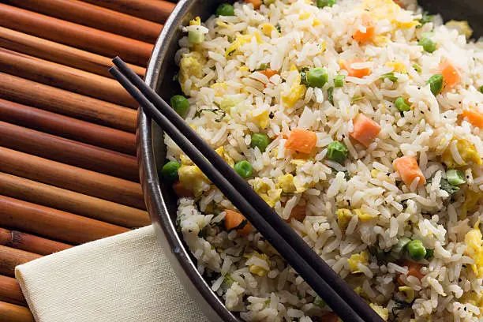

Home
Fried Rice Recipe

Description
Fried rice is a versatile and flavorful dish that combines cooked rice with a variety of ingredients such as vegetables,
proteins (like chicken, shrimp, or tofu), and seasonings. It is typically stir-fried in a wok or large skillet,
allowing the flavors to meld together while creating a slightly crispy texture. Fried rice is a popular choice for
using up leftover rice and can be customized to suit different tastes and dietary preferences.
Ingredients
- Cooked rice (preferably day-old)
- Vegetable oil or sesame oil
- Onion (chopped)
- Garlic (minced)
- Mixed vegetables (like peas, carrots, and corn)
- Protein of choice (chicken, shrimp, tofu, etc.)
- Soy sauce
- Oyster sauce (optional)
- Eggs (beaten)
- Green onions (sliced)
- Salt and pepper to taste
Procedures
- Heat the oil in a large wok or skillet over medium-high heat.
- Add the chopped onion and minced garlic, and stir-fry until fragrant.
- Add the mixed vegetables and cook until they are tender-crisp.
- Add the protein of choice and cook until it is fully cooked.
- Push the ingredients to the side of the wok and crack the eggs into the center. Scramble the eggs until they are cooked through.
- Add the cooked rice to the wok and stir-fry everything together.
- Season with soy sauce, oyster sauce (if using), salt, and pepper to taste.
- Garnish with sliced green onions before serving.